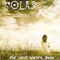

Celtic Lyrics Corner > Artists & Groups > Solas > The Hour Before Dawn
|  |
The Hour Before Dawn
(2000) |
| Tracks : |
1.
Bheadh Buachaillin Deas Ag Sile
2. Granny Quinn's/The Lilac Reel/Sporting Pat 3. Last Of The Great Whales 4. A Little Child 5. A Miner's Life 6. What's Up With Win/Sonny Brogan's/Cahal's Jig 7. When My Love And I Parted 8. Homeless 9. Boy/Girl Tune 10. Bruach Na Carraige Baine 11. Bonnie Mae 12. The New Custom House/The Flavor Of The Month/The Tinkers Daughter/Dogs Among The Bushes/Pinch Of Snuff 13. I Will Remember You |